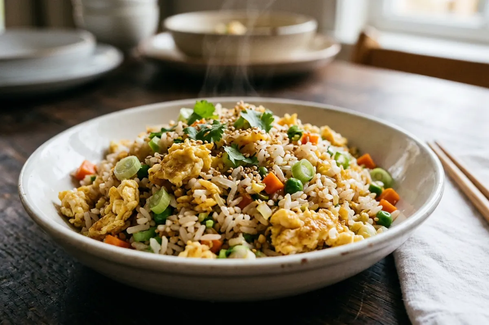

15-Minute Egg Fried Rice

Egg fried rice is the best use of leftover rice there is. Cold rice, a hot pan, beaten eggs and a handful of peas and carrots come together in about ten minutes, and the result is far better than anything from a takeaway container.
The recipe serves three as a side or two as a main. Everything needs to be chopped and ready before the pan goes on, because once you start, there is no time to look for the soy sauce.
Ingredients
- 3 cups cooked, cold rice (about 1 cup uncooked)
- 3 tbsp neutral oil, divided
- 3 large eggs, beaten
- 1 cup frozen peas and carrots, thawed
- 2 cloves garlic, minced
- 3 green onions, sliced
- 2 to 3 tbsp soy sauce
- 1 tsp toasted sesame oil
- Black pepper, to taste
Instructions
- Heat 1 tbsp oil in a large skillet or wok over medium-high heat. Add the eggs and scramble until just set. Transfer to a plate.
- Add the remaining 2 tbsp oil. Cook the garlic and peas and carrots for 2 minutes.
- Add the cold rice and break up any clumps. Stir-fry for 3 to 4 minutes until hot and lightly toasted.
- Add the soy sauce and toss to coat. Return the eggs to the pan.
- Turn off the heat, stir in the sesame oil and green onions, and season with pepper. Serve hot.
- Use high heat and a large pan so the rice fries rather than steams.
- Break up the rice with a spatula before adding the sauce.
- Have everything chopped before you start. It cooks fast.
- Add diced cooked chicken, ham or shrimp.
- Stir in a spoonful of chili crisp or sriracha.
Why this recipe works
Cold rice is drier rice. Chilling cooked rice firms the grains and drives off surface moisture, so it fries instead of steaming into a sticky mass. High heat and a large pan give the rice room to toast, which is where the flavour comes from.
Tips for success
- Break up clumps of cold rice with wet hands or a spatula before it goes in the pan.
- Cook the eggs first, remove them, and add them back at the end so they stay in tender curds.
- Season with soy sauce around the edge of the pan rather than in the middle; it hits the hot metal and blooms.
Substitutions that work
- Any cold cooked long-grain rice works, including jasmine or basmati. Freshly cooked rice will turn sticky.
- Frozen peas and carrots can go in straight from frozen and will thaw in seconds.
- Add diced ham, cooked shrimp or tofu for a more substantial dish, and chili crisp for heat.
Storage and make-ahead
Cool leftovers quickly and refrigerate within an hour, then keep for two days. Reheat thoroughly in a hot pan until steaming, not in a low microwave, and do not refreeze rice that has already been reheated.
Serving suggestions
Serve it alongside beef and broccoli stir fry, sesame noodles or grilled salmon. On its own, a fried egg on top and a drizzle of chili oil makes it a complete meal.
Frequently asked questions
Can I use freshly cooked rice for fried rice?
You can, but spread it on a tray and let it cool completely first. Fresh rice holds too much moisture and tends to clump and steam rather than fry.
How do I stop fried rice sticking to the pan?
Use a well-heated pan, enough oil, and rice that is cold and dry. A nonstick wok or a seasoned cast iron pan makes the biggest difference.
Is egg fried rice safe to reheat?
Yes, if it was cooled quickly and refrigerated promptly. Reheat until piping hot throughout and eat within a day of reheating.